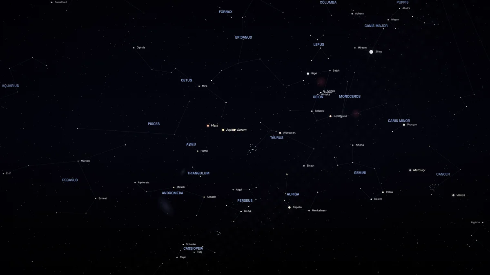
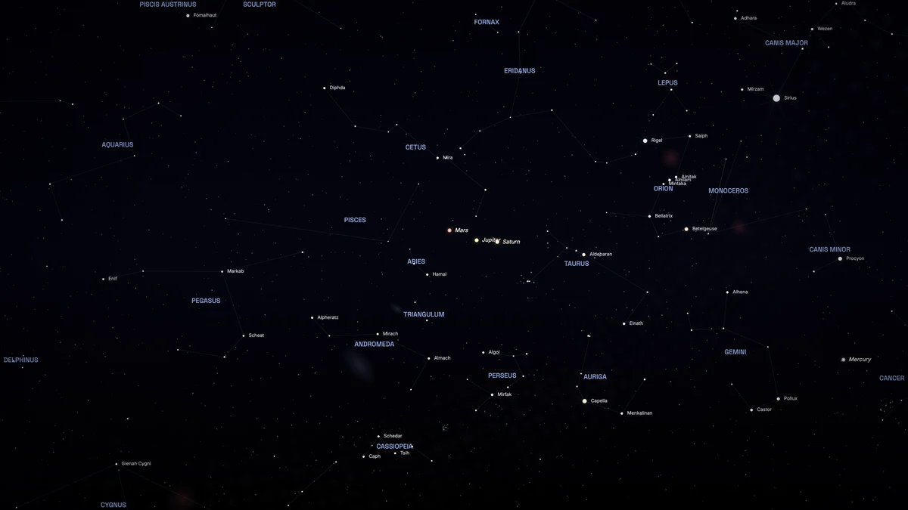

One limit, drawn by the product itself

For 9:00 pm in Mumbai, it treats the moment as 4:00 pm in world time.

The true moment is 3:30 pm in world time, so the sky has turned 7.5° less.
Look at the left edge: Delphinus and Cygnus appear only in the second picture, because the sky has not yet turned as far.
Both images are BirthSky's own output for the same name, date, time and place. Only the offset was changed for the second one.